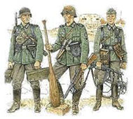
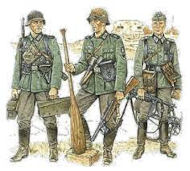

Voçe pode escrever um paragráfo de qaulquer
Basta colocar tudo no par de TAGS <p> e </p>.
Se precisar quebrar um texto especifico como esse
basta usar a tag <br>.
A Segunda Guerra Mundial foi um conflito militar global que durou de 1939 a 1945, envolvendo a maioria das nações do mundo — incluindo todas as grandes potências — organizadas em duas alianças militares opostas: os Aliados e o Eixo. 😛
Foi a guerra mais abrangente da história, com mais de 100 milhões de militares mobilizados com um custo abusurdo em dolár $. Em estado de "guerra total", os principais envolvidos dedicaram toda sua capacidade econômica, industrial e científica a serviço dos esforços de guerra, deixando de lado a distinção entre recursos civis e militares. ™
 
